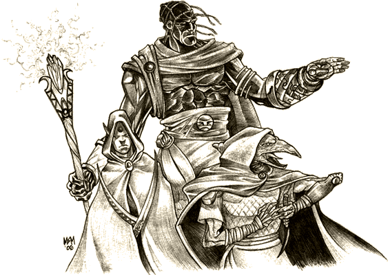

|
|

Willkommen auf der frei editierbaren Fan-Seite
für das Fantasy-Rollenspiel Earthdawn mit
stolzen 1336 Seiten.
ir sind ein Wiki - genau wie das
berühmte WikiPedia - und das
heißt, daß jeder diese Seiten bearbeiten darf.
Wir möchten Euch hier eine Plattform bieten, um
Monster, Abenteuer, Charaktere usw.
zu publizieren.
Earthdawn ist
unsere Leidenschaft, und wir möchten dieses
großartige Spiel gerne unterstützen und ein
wenig reicher machen. Unser Wunsch ist es, der
Anhalter durch Barsaive zu sein.
Ein Wiki lebt von Deiner Mitarbeit. Falls Du Dich noch
nicht mit Wikis auskennst, lies die WikiEtiquette und
probiere Deine ersten Schritte in der Sandbox.
fade to 60%
fade to 0%
Unser erster Auftrag war beendet, es ging um ein lebendsspendendes Elexier, ein besonderes Wasser aus den Tiefen des Servos. Leider war es Umgeben von den abscheulichsten Kreaturen, jedes wahren Lebens ausgesogene Kadavermenschen, die jede Nacht erneut erwachten. Erst hatten wir die verstreuten Leichen gar nicht beachtet, abgesehen von einem ersten Schrecken. Unzählige waren es, ein Dorf, zuviele selbst um sie an einem Tag in den Bach zu werfen. Am Tage lagen sie herum und waren einfach nur damit beschäftigt, tot zu sein.
Aber in der Nacht standen wir an den Toren des Abgrundes, ein Dämon war das Zentrum aller Befleckung. Wir metzelten uns durch die Untoten, nur mit einem Stock wehrte ich mich ihrer, Stinkbomben waren da wohl nicht mehr nötig gewesen. Meine Kameraden schlugen sich tapfer, ohne sie wäre ich jetzt tot, was mich eindeutig unterfordert hätte. Und wir schafften das unmögliche. Wir töteten das absolute Negative, die Essenz des Grauens und der Schrecken, einem Dämon standen wir gegenüber, und auch wenn mancher fiel - niemand folgte dem Höllenhund in seine Tiefen, wir alle blieben am Leben, schwer verwundet, aber die Quelle gab uns Kraft.
Und unser erstes finanzielles Auskommen. Unser Auftraggeber wollte erste Geschäftsbeziehungen wegen der Nutzung der Quelle schließen und schickte uns so nach Darranis mit einem Faß Quellwasser. Als ich am ersten Morgen zu meinen Kameraden zum Frühstück kam, saß dort dieser Type, ein kräftiger blonder Elf im Schießershirt, Marke Alphamännchen. Und er machte allen Kaffee. Doch hatte er diesen Blutfleck auf dem Hemd, es schien nicht von ihm zu sein. War cool und relaxed, und wie mir unsere Elfe verriet, war er Schwertmeister und von noch höherer Erstdiziplin dazu. Unser Troubadour schien ihn nicht zu mögen, im Gegensatz zu den meisten anderen.
Die Nacht wahr sehr ruhig gewesen, und die kleine Elfe war noch nicht so weit. Ein gutes Glas Wodka und eine Havanna halfen mir über meine Lage hinweg, so saß ich also da in meinem miefigen Hotelzimmer und putzte meine Waffen. Man konnte nie wissen. Manchmal flog so eine auf Dich ab, und peng! Direkt am ersten Abend erwischst Du sie. Manchmal läßt man sie aber auch ein wenig zappeln. Oder sie einen selbst... und genau das unterscheidet einen echten Profi von einem Amateur.
Ich hatte mich vor kurzem als Amateur erwiesen.
Eine Truppe Frischlinge kampierte in der Herberge. Ein Zergkrieger, ein Dieb, noch ein freakiges Weichei, die Kleine und ein Alchemist, den man von weitem roch. Er war wohl in eine russische Chemiepfütze gefallen, stellte sich aber als Scholar vor.
Tja, am Abend hatte ich diesen Besucher. Sollte mir schöne Grüße von Clystein ausrichten und wollte mich umbringen. Vom Bürgermeister von Märkteburg hätte ich mehr erwartet. Ein gewöhnlicher Straßenräuber für 50 Goldmünzen.... ich verstand die Botschaft. Wo sollte ich mit der Leiche hin? Morgen früh würden wohl die Wachen kommen.
Es gibt verschiedene Wege, sich einer Leiche zu entledigen. Die spektakulärste ist, sie von einem Drachen fressen zu lassen. Was eine Meisterleistung ist, an der schon mancher gescheitert ist. Schnapp! Und Du bist weg. Sie mögen es, Dich so al dente zu schmoren, daß der Kern noch schön lebendig ist. Man kann so was am besten hinbekommen, wenn man einen größenwahnsinnigen Konkurrenten aus dem eigenen Gewerbe ausschalten will. So wie damals der alte Jack... hielt sich für die Nummer eins. War gut im Geschäft gewesen und hatte einen ordentlichen Coup hingelegt, der ihm eine Menge Zaster einbrachte, viel mehr, als für einen einzelnen Mann gesund sein könnte. Ich erzählte ihm von dieser Drachennummer und nahm mir auf derselben Party seine Frau vor. Er schmiedete einen Plan, suchte nach einem Drachen - und fand einen. Amateur.
Aber für gewöhnlich reicht ein Sumpf, ein Friedhof, oder einfach nur Misthaufen. Nur im Zentrum von Märkteburg ist es nicht wirklich einfach. Auf den Straßen war noch immer ziemlich viel los.
Schließlich gab es da noch das Hackbrett. Eine Schweinearbeit. Jeder, der schon einmal in einem Schweineschlachthof war, weiß, was ich meine. Litterweise Blut. Man braucht also eine Kanalisation und eine Badewanne. Leider war das Zimmer nicht so gut ausgestattet. Das Zerlegen ist nicht einfach, wenn man noch Pläne mit dem Fleisch hat, aber in der Regel muß man nur die Knochen kleinsägen und alles andere gleich mit. Hat man einen Schweinestall, ist der Abend gerettet.
Ich hatte nichts übrig für unnötige Küchenarbeit, und wozu gibt es denn Frauen? Also probierte ich es noch mal bei der kleinen Elfe. So ganz abgeneigt zu sein schien sie j a nicht, mein Arsch war ihr wohl aufgefallen. Ein paar Glas billigen Wein - ein paar ehrliche Komplimente - und schon könnte sich ein langweiliger Abend von einem Problem in eine Lösung verwandeln, in eine Lösung mit Titten und Sex, was mein persönlicher Weg ist. Und am nächsten Morgen liegt unter dem Bett, in dem sie schläft, eine Leiche.
Irgendwie hatte ich mich wohl nicht genug angestrengt, jedenfalls blieb ich in der Nacht alleine, abgesehen von meinem Zimmergenossen, der seinen ewigen Schlaf schon gefunden hatte.
Der Schlaf wollte nicht leicht kommen, hatte ich doch immer noch diese Gefühl, beobachtet zu sein. Tja, in meiner Branche. Vanessa kam mir wieder in den Sinn. Nicht diese kleine Elfe da nebenan, sondern Vanessa Clystein. Ihr hatte ich das alles schließlich zu verdanken. Erste Regel, verliebe Dich nie. Schon gar nicht in die Frau von einem hohen Tier. Schon gar nicht von Clystein.
Aber so kam halt eines zum anderen. Dinge finden sich, und in diesem Fall hat sie gesucht. Sie suchte Nähe. Schutz. Ein Mann. Mich. Eine Traumfrau, selbst für einen Menschen hatte sie dieses etwas, ihre primitive Menschlichkeit zog mich irgendwie an...Sie erzählte mir von ihrem Mann und von all dem Quatsch, der Ehe zu so einer leeren Lüge macht.
Wo sie jetzt wohl gerade steckte?
Egal.
Ich würde sie finden.
|
|
 )
)